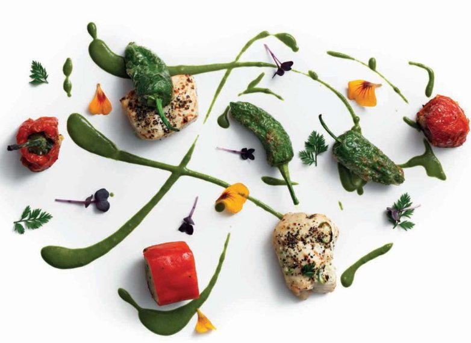

Chilli chicken (Mirchi murg)

Whenever you think of chilli chicken, I’m betting it is the red-coloured Chinese preparation that comes to mind. Even for an Indian, this dish can conjure up a different mental picture to what we serve at Benares. I have played on those emotions and have converted this dish into a totally different recipe – mind games! This is a starter recipe on the Benares menu, but the quantities can be doubled as here for a main course.
For the chicken tikka
For the chicken-stuffed peppers
For the green paste
For the korma gravy
To garnish
To make the chicken tikka, mix the garlic and chilli pastes with the marinade, then rub all over the chicken supreme pieces and leave to marinate for 2 hours in the fridge.
For the chicken-stuffed peppers, preheat the oven to 200°C and line a roasting tray with a non-stick oven mat. Slit the red peppers lengthways, without cutting all the way through, but make a large enough slit to be able to stuff with the chicken mixture. Remove all the seeds and the membranes with a small spoon and discard. Place the chicken mince in a bowl with the remaining ingredients with salt to taste and mix together well. Fill each pepper with a one-quarter of the chicken filling. Brush with a little sunflower oil.
Place the stuffed peppers, slit sides up, in the roasting tray and roast for 10–12 minutes, basting once or twice with oil, until the chicken mince is cooked through and no longer pink. Remove from the roasting tin, set aside and keep hot until ready to serve. Turn the oven temperature down to 180°C.
Melt the butter with the oil in a small pan. Place the chicken supreme pieces in the roasting tray and roast for 10 minutes, or until cooked through and the juices run clear when pierced with a knife. Baste with the butter and oil mixture, then leave to rest for 5 minutes, covered with foil. (You can also cook these chicken pieces on a barbecue or in a tandoori oven if you are lucky enough to have one at home.)
Meanwhile, make the green paste for the gravy. Put the green leaves and coriander stalks in a blender or food processor with the water and blitz. Add the green chilli paste and blitz again until a fine paste forms.
To make the gravy, melt the butter with the oil in a wok or large pan. Add the green paste and sauté over a medium heat for 1 minute. Stir in the shahi gravy and simmer for 2–3 minutes to blend the flavours. Stir in the black pepper and garam masala, then add the lemon juice, sugar and salt to taste to balance the flavours. Transfer to a squeezy bottle and keep hot until ready to serve.
Just before serving, fry the pimiento de pedras for the garnish. Heat the olive oil in a frying pan over a high heat, add the pimientos and stir-fry for 3–4 minutes until they are tender and blistered. Sprinkle with salt to taste.
To serve, slice the stuffed peppers and arrange with the chicken tikka on plates, then go to town and add swirls of the sauce and the other garnishes. Use your imagination!